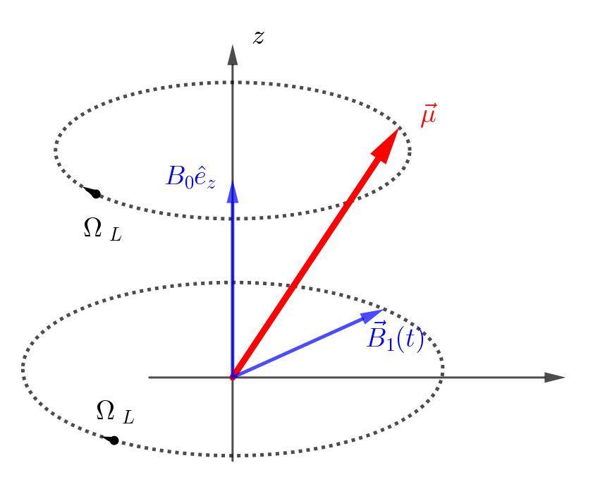

Atomic and Optical Physics I, 03 ResonanceIII: Rapid adiabatic passage
Information
- 官方介绍: https://ocw.mit.edu/courses/physics/8-421-atomic-and-optical-physics-i-spring-2014/
- 视频列表地址: https://www.youtube.com/playlist?list=PLUl4u3cNGP62FPGcyFJkzhqq9c5cHCK32
Atomic clocks
Motion in a rotating magnetic field, Resonance, $\pi$ pulse
考虑 classical 的情况.
假设磁矩 $\vec{\mu}$ 处于磁场中磁场为
$$\begin{align} \vec{B}(t) = B_0 \hat{e}_z + B_1(\hat{e}_x \cos \Omega_Lt - \hat{e}_y \sin\Omega_Lt) \end{align}$$也就是说在 $z$ 方向有一个 static field, 在 $xoy$ 平面内有一个以 Lamor 频率 $\Omega_L = -\gamma B_0$ 旋转的 rotating field. 在 rotating frame ( $x', y', z$ ) 中, 根据上一节的知识, 等效的磁场为
$$\begin{align} B_{\mathrm{eff}} = (B_0 + \frac{\Omega_L}{\gamma})\hat{e}_z + B_1\hat{e}_x = B_1\hat{e}_{x'} \end{align}$$也就是说 $z$ 方向的 static field 被抵消, 只剩下 $x'$ 方向的一个 static field. 因 此, $\vec{\mu}$ 会绕 $x'$ 轴以 Rabi 频率 $\omega_R = - \gamma B_{1}$ 进动. 因此总的效果是会 将 spin flip 一下. 比如
$$\begin{align} t =& 0, \quad\vec{\mu} = \mu \hat{e}_z \\ t =& \frac{\pi}{\omega_R}, \quad\vec{\mu} = \mu \hat{e}_z \end{align}$$也叫 $\pi$ pulse.

如果磁场不是 rotating 的, 比如是沿某个方向线偏振的, 那么可以分解成两个方向相反的 rotating 的叠加. 在 rotating frame 中, 一个方向的 rotating 会变成 static, 而另一 个方向上的 rotating 会变成原来频率的 2 倍 rotating, 这个高频的 rotating 通常不会 有物理效果, 所以被忽略, 这就是 rotating wave approximation!
Generalized Rabi Frequency
如果 $B_{1}$ rotating 的 frequency $\omega \neq \Omega_L$ , 那么等效的磁场就不会完全抵消 $B_0$ , 那么
$$\begin{align} \vec{B}_{\mathrm{eff}} = B_1 \hat{e}_{x'} + \left(B_0 - \frac{\omega}{\gamma} \right) \hat{e}_z \end{align}$$其大小为
$$\begin{align} |B_{\mathrm{eff}}| = \sqrt{B_1^2 + (B_0 - \frac{\omega}{\gamma})^2} \end{align}$$可以定义 generalized Rabi frequency (之后都取 $\gamma = |\gamma|$ ?)
$$\begin{align} \Omega_{R} = \gamma B_{\mathrm{eff}} = \sqrt{(\omega_L - \omega)^2 + \omega_R^2} = \sqrt{\omega_R^2 + \delta^2} \end{align}$$其中 detuning $\delta = \omega_L - \omega$
Compare with quantum result
如图, 对两个三角形用余弦定理
$$\begin{align} A^2 =& 2 \mu^2 (1 - \cos\alpha) \\ A^2 =& 2 \mu^{2} \sin^2\theta (1 - \cos\phi) \end{align}$$并利用
$$\begin{align} \sin \theta =& \frac{B_1}{B_{\mathrm{eff}}} = \frac{\omega_R}{\Omega_R} \\ \phi(t) =& \Omega_R t \end{align}$$可以严格地求得 $\mu$ 在 $z$ 方向上的投影
$$\begin{align} \mu_z(t) = \mu\sin\cos\alpha = \mu \left[ 1 - 2 \frac{\omega_R^2}{\Omega_{R}^2}\sin^{2} \left( \frac{\Omega_R}{2}t \right) \right] \end{align}$$如果我们定义
$$\begin{align} P_{\uparrow \to \downarrow} \equiv \frac{\mu_z(0) - \mu_z(t)}{2 \mu_z(0)} \end{align}$$那么
$$\begin{align} P_{\uparrow \to \downarrow} = \frac{\omega_R^2}{\Omega_{R}^2}\sin^{2} \left( \frac{\Omega_R}{2}t \right) \end{align}$$这正是量子的结果.
Rapid adiabatic passage (RAP) (classical counterpart of Landau-Zener transition)
现在 change the frequency of the rotating field. Sweeping the frequency *thtrough the resoance*, we can invert the spin, we can tun over the magnetic moment in a very robust way.
- slow: compare to the Larmor frequency
- rapid: compare to all the things mentioned here(decoherence and relaxition processes).
这里不做严格计算, 只给一个 intuitive picture
$\vec{\mu}$ , static field $\vec{B}_0$ , $\vec{B}_1$ rotating at $\omega$ , $|B_{1}| \ll |B_0|$ , start with $\omega << \gamma B_{0}$

In adiabatic limit, the spin processes tightly ( $\theta$ is small) around $\vec{B}_{\mathrm{eff}}$ , follows the direction of the effective magnetic field.
所以当扫到 detuning $\delta = 0$ 时, $\vec{\mu}$ 转到了 $x'$ 方向, 当继续扫到 $\omega \gg \gamma B_0$ 时, spin 被 flip.
无论是从高频向低频扫, 还是从低频向高频扫, 只要扫过共振频率, the rapid adiabatic passage always swaps the spin state.
这在实验上很有用, 因为像之前那样直接加到共振频率上, 如果频率稍有偏差, spin 就不 会完全被 flip. 但是 RAP 的话, 只要扫过共振频率, spin 就会被完美地 flip!
同样的物理机制, 但是操作完全不一样, 就是让 spin 在 quadrapolar fields magnetic trap 中同移动, 磁场也能从一个方向扫到相反的方向. 在中间可能发生 Majorana losses.